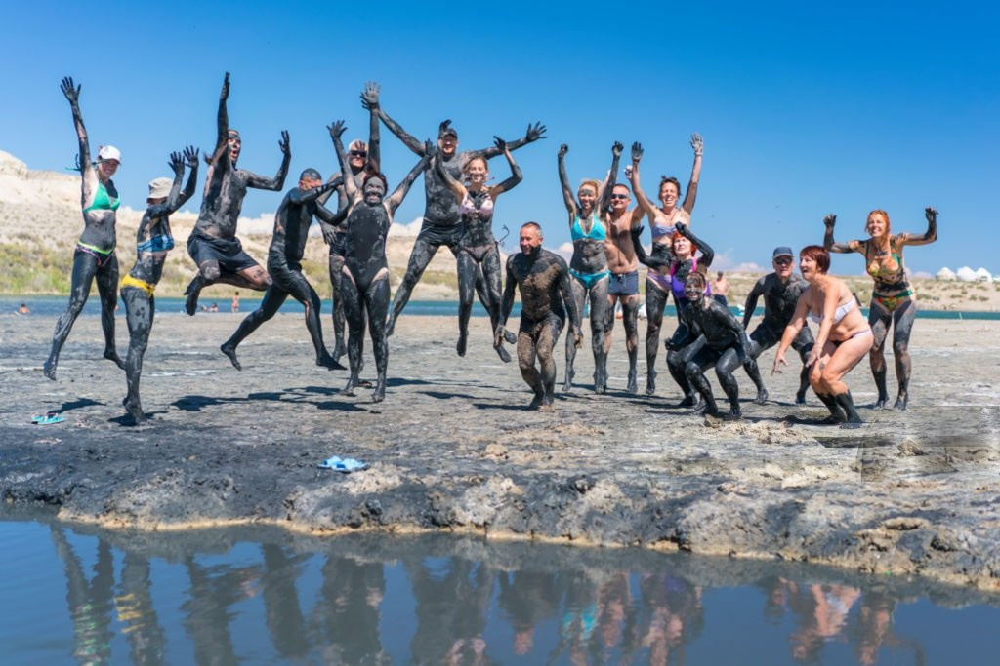
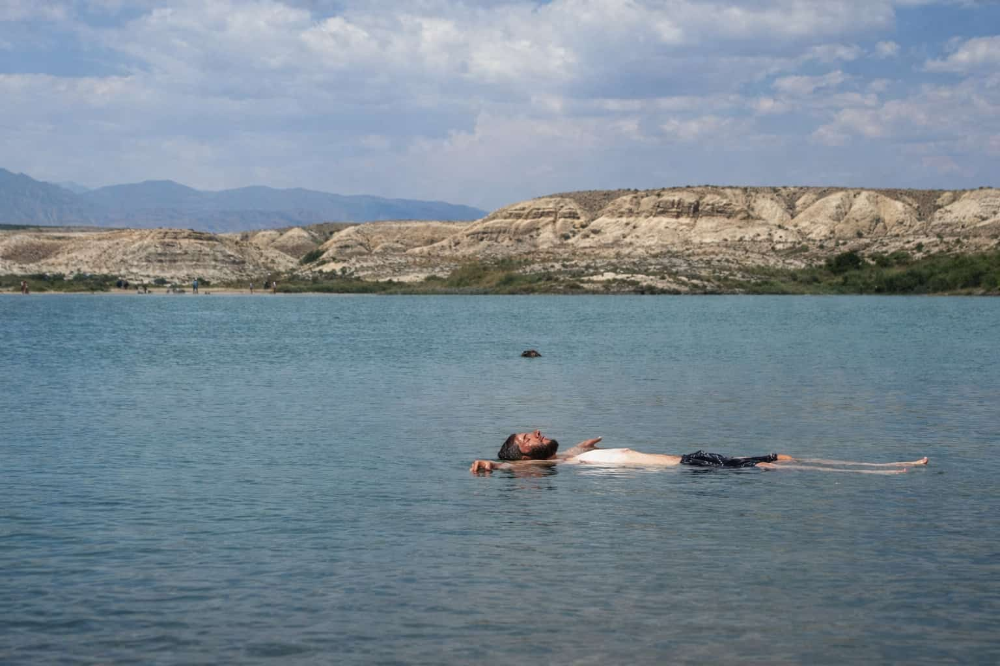
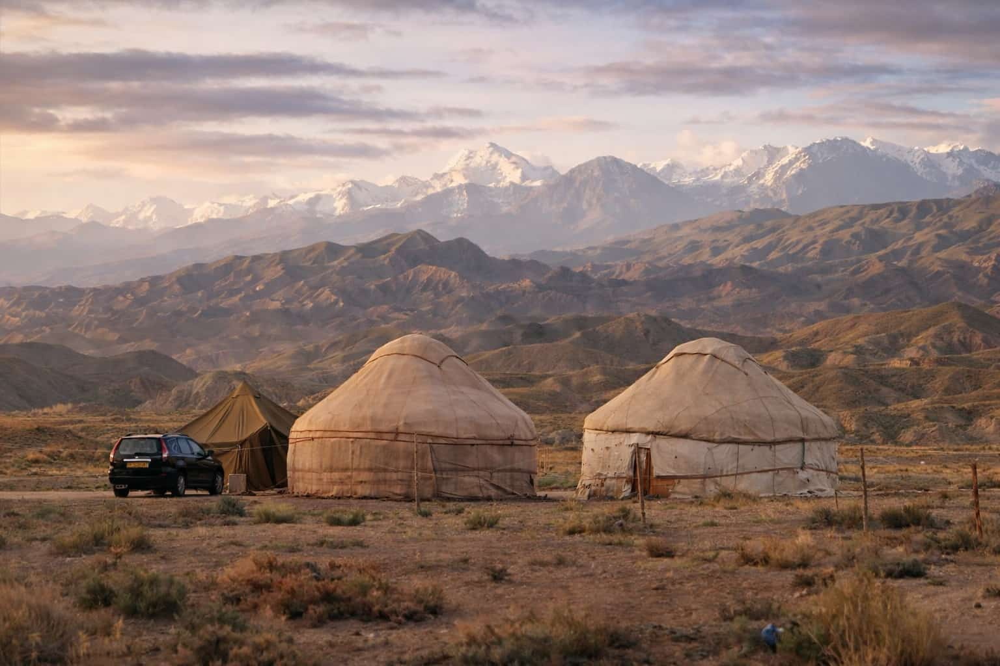
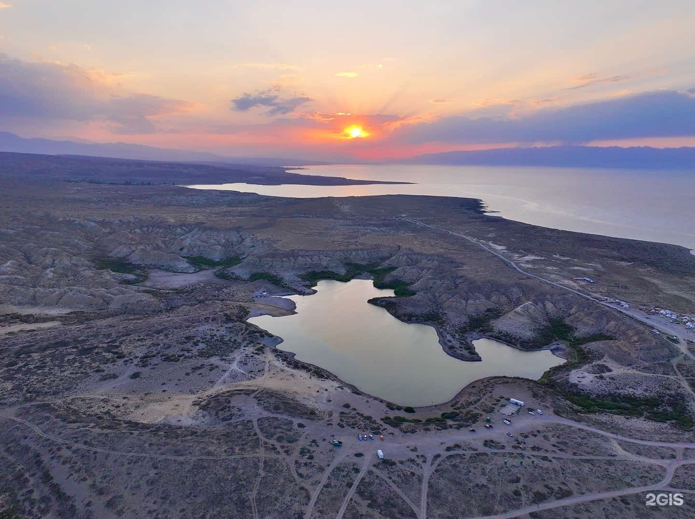
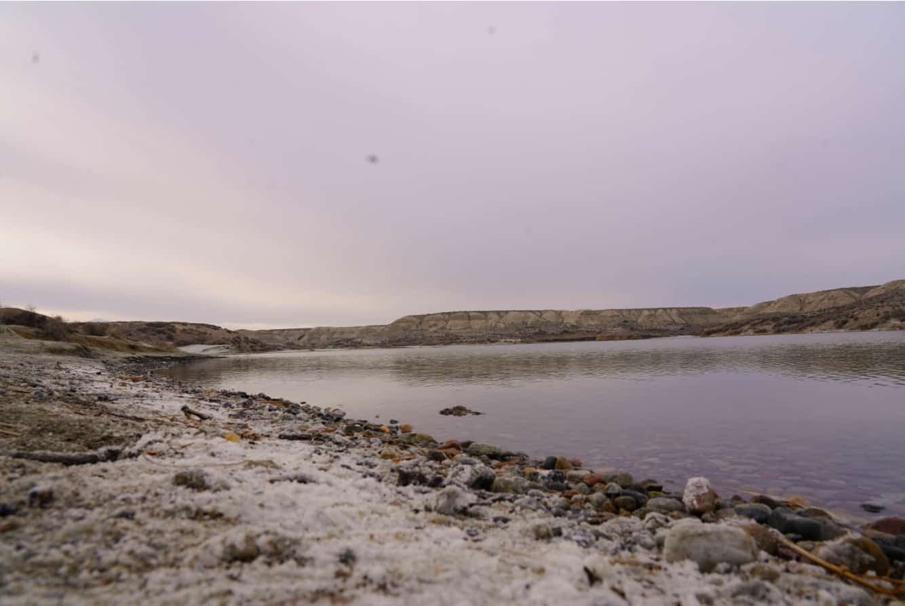
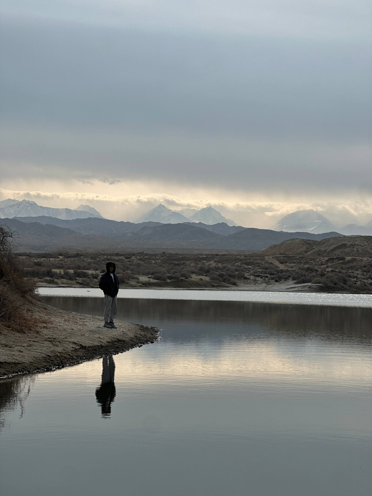
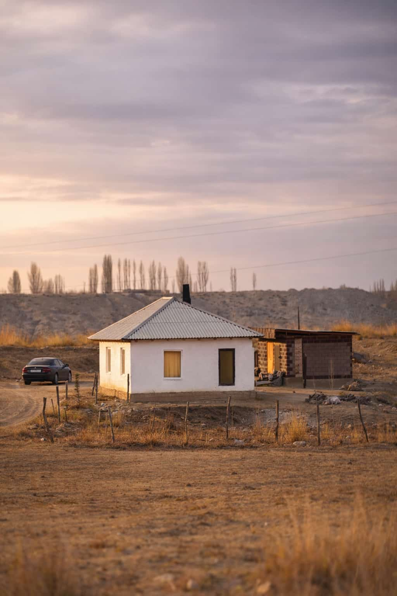
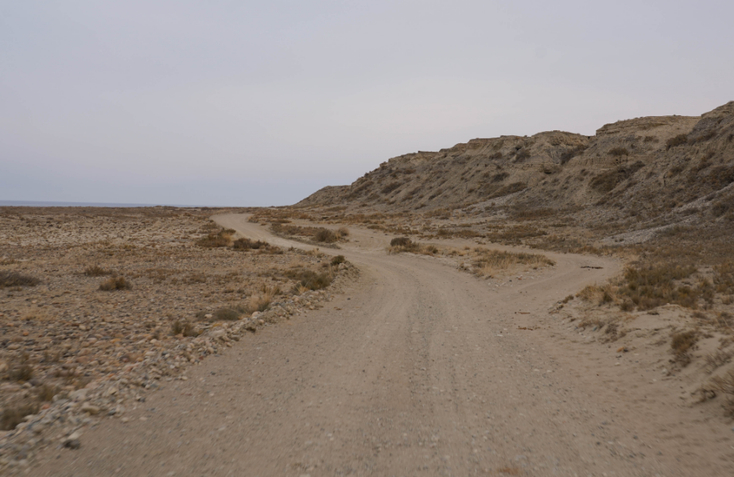

Dead Lake (also called Salty Lake or Kara-Kol) is a hidden pocket of salty water near Issyk-Kul. It sits in a hollow separated from the big lake by hills, rocks, and sandy ridges — which makes it feel like its own little world. In summer, people come to swim, float, and cover themselves in mineral-rich mud.
What is Dead Lake (Salty Lake) in Kyrgyzstan?
This small salty lake is located on the south shore of Issyk-Kul. Even though Issyk-Kul itself is known as the “Warm Lake” and doesn’t freeze, Dead Lake is where you come specifically for the saltwater feel and the лечебная грязь — therapeutic mud from the bottom.
Locals and travelers usually call it Dead Lake because the high salinity creates that “floaty” experience (and because it’s not the kind of place you’ll see fish jumping around).

Mud Therapy
The main ritual: apply mineral mud, let it dry a bit, then rinse in the salty water. It’s why this place stays busy in summer.

Salt Water Floating
Expect a dense, salty feel that makes swimming effortless. It’s not the Dead Sea — but the vibe is similar: relax, float, recover.

Seasonal Yurt Camps
In peak season, yurt camps appear on the shore — a great place to rest and try Kyrgyz food after the lake.

South Shore Road Trip Stop
The south shore road runs close to the water, so Dead Lake is an easy add-on between canyon viewpoints, beach stops, and village cafés.
How to get there
The turnoff is just after the village of Kara-Koo. You go along the Ak-Terek river — the road is short (about 13 km) but bumpy and unpaved, so plan extra time and drive carefully.
Where to get the shot



Quick tips before you go
-
 Don’t drink the lake water It’s extremely salty and mineral-heavy — enjoy it for bathing, not for drinking.
Don’t drink the lake water It’s extremely salty and mineral-heavy — enjoy it for bathing, not for drinking. -
 Bring simple footwear Flip-flops or water shoes make the muddy shore much easier (and cleaner).
Bring simple footwear Flip-flops or water shoes make the muddy shore much easier (and cleaner). -
 Sun protection is not optional Open shore + reflected light = fast sunburn. Bring SPF and a cap.
Sun protection is not optional Open shore + reflected light = fast sunburn. Bring SPF and a cap. -

Road is short but rough The last stretch is bumpy and unpaved — drive slow and keep time for the return.